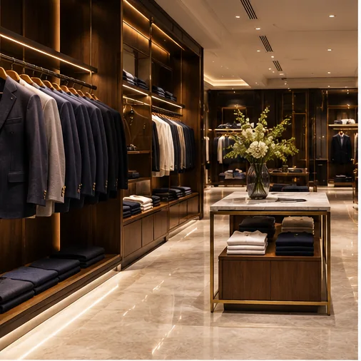
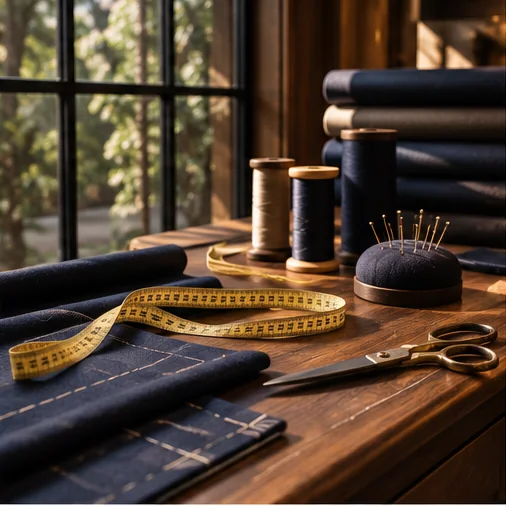
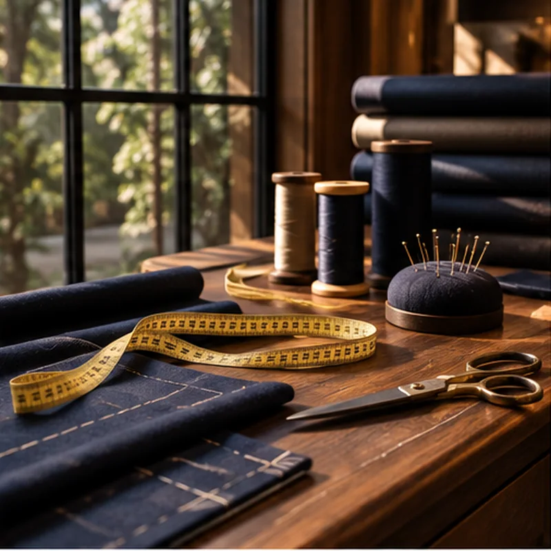
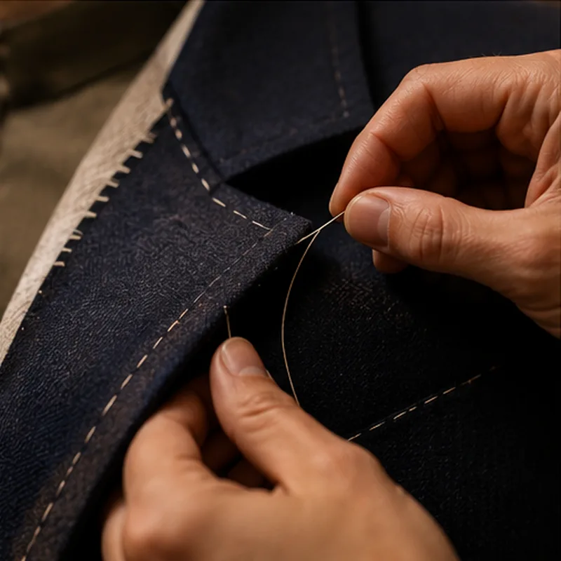
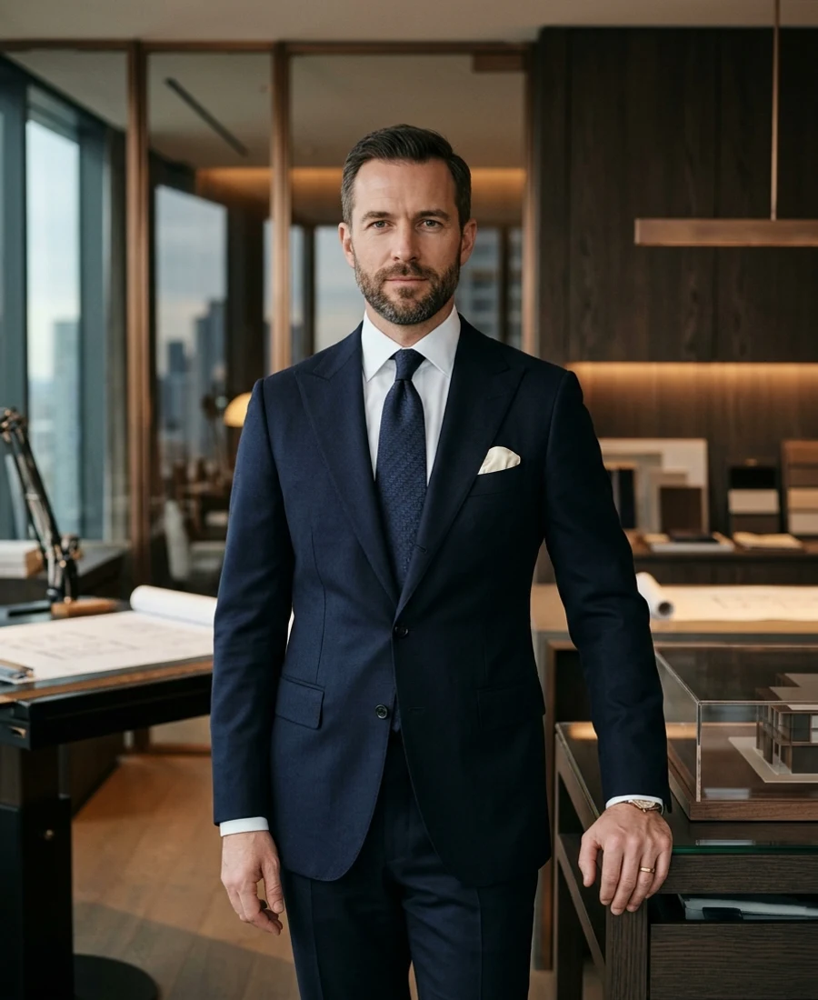
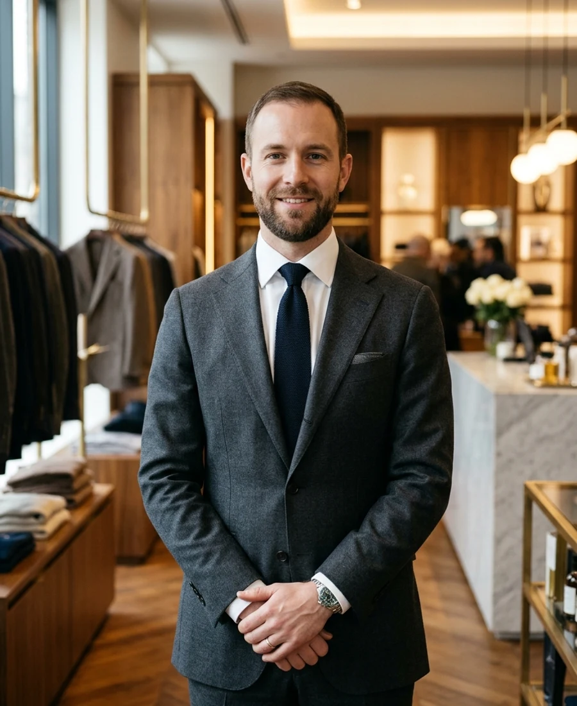
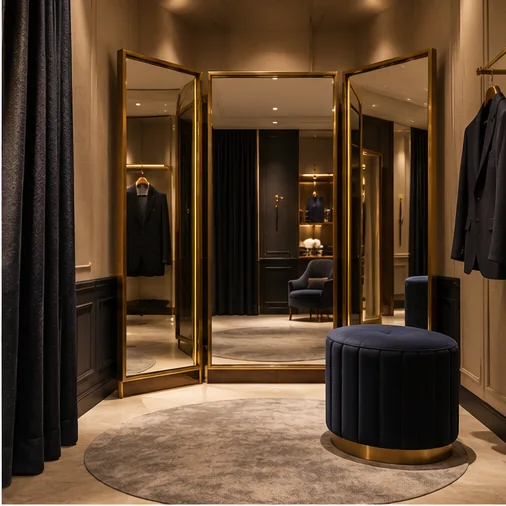
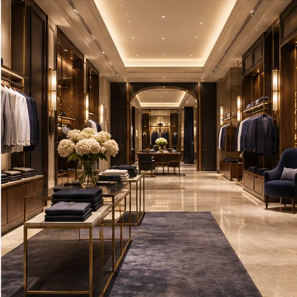

Super 120s Merino Wool
Natural Australian merino wool woven into a high-twist twill that naturally repels wrinkles and drapes with liquid grace.
A contemporary point of view on luxury menswear: where classical tailoring discipline meets modern comfort, quiet confidence, and noble natural fibers.

VELORO was founded on a singular conviction: that modern formalwear should never feel like a stiff costume, but rather a natural extension of a gentleman’s personal distinction.
In a world saturated with transient trends and disposable synthetic fabrics, VELORO champions enduring silhouettes. We curate crisp two-fold cotton shirting, structured Super 120s wool suiting, unconstructed linen blazers, and celebratory occasionwear designed for life’s milestone chapters—from high-stakes boardrooms to sacred vows.
Discover The Collection
A millimeter on the shoulder seam dictates whether a jacket commands respect or collapses. The curve of a collar stand determines how naturally a silk tie knots. At VELORO, we engineer each proportion so that you never have to think twice about how you look.


HAND-FINISHED SARTORIAL SEAMSExceptional style begins long before a garment touches the rack. It is forged in the tension of the needle, the soft resilience of the canvas interlining, and the hand-picked AMF stitching that outlines our lapels.
The foundation of every VELORO garment is ethically sourced cloth from heritage European and Indian mills.
Natural Australian merino wool woven into a high-twist twill that naturally repels wrinkles and drapes with liquid grace.
Extra-long staple cotton harvested in the Nile Delta, spun into silky two-fold 100s yarns for breathable, lustrous shirting.
Airy and hollow-fibered, delivering unmatched cooling comfort during warm-weather garden and coastal celebrations.
Hand-woven silk grenadines and evening duchess satins that capture the light with subtle, dignified richness.
The visionaries shaping our silhouette innovation, showroom hospitality and textile standards.

LEADERSHIPSpearheads VELORO's design ethos, brand philosophy and relentless commitment to sartorial perfection. With fifteen years across European and Indian bespoke menswear, Vikramaditya shapes every silhouette to balance timeless formality with modern comfort.
“True luxury in menswear does not shout; it is whispered in the perfection of the shoulder and the drape of fine wool.”

EXPERIENCEOversees the VELORO showroom experience, concierge operations and personal fitting appointments. Kabir ensures every client receives attentive, unhurried guidance from their initial consultation to final hand-tailored adjustments.
“A garment only truly comes alive when the wearer feels completely understood and effortlessly comfortable.”
Leads seasonal collection curation, textile innovation with heritage mills, and bespoke wardrobe styling for celebrations, boardrooms and red carpet occasions. Aarav brings an editorial sensibility to classic formalwear.
“Modern formalwear is about intentional restraint: choosing one impeccable hero piece and letting every detail support it.”
Every garment bearing the VELORO mark is governed by four core commitments to sartorial integrity.
A luxury label is only as good as its posture. If an item doesn't drape cleanly when seated and moving, it doesn't make our collection.
We say no to petroleum-based synthetic blends in our suiting. Only breathable, renewable natural wool, linen, silk and cotton fibers.
We do not chase transient micro-trends. Our garments are designed to look as commanding ten years from now as they do today.
Shopping for fine tailoring should be as memorable as the event you are attending. Our flagship showroom is designed as a sanctuary of sartorial discovery.


VELORO is presented as a demonstration luxury retail concept. Fictional profiles and sample prices are provided for preview purposes. Verify live business contact information in assets/js/data.js before commercial deployment.